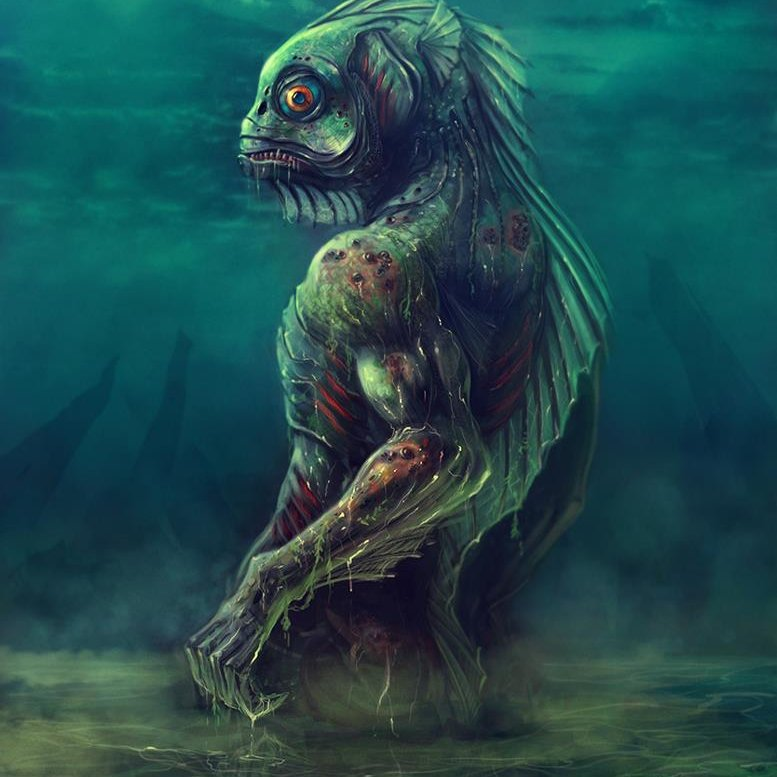

Click tabs to know about the Philippine Mythical Creatures
Kapre
The kapre is a Philippine cryptid creature with the appearance of an phenomenally tall, long-legged, god type of hairy humanoid, that sits in big trees and smokes cigarettes. It is often seen waiting for people as they walk through a path. It scares away little children who play at night. If you're stuck in a place and you keep going around in circles, you're said to be played around by a kapre. To escape its control, you must remove your shirt/clothing, and wear it inside-out.
The term kapre comes from the Arabic word "kaffir", meaning a non-believer in Islam. The early Arabs and the Moors used it to refer to the non-Muslim Indians who were dark-skinned. The term "kaffir" was also used for Papuan slaves brought to the Philippines by the Portuguese before slavery was abolished by Spain.
Kapres are not necessarily considered to be evil, unlike the Manananggal. According to some experiences, the kapre have moved on from smoking nigh-endable cigars to drinking beer. Some kapre are rather wise, some rated brute like, but they all have one common thing, they have an odd desire of watching over farm animals and locals. Their demeanor is that of protection and knowing of it's care, but know this, if one were to make a kapre mad, then all hell breaks loose, as the kapre can go ahead and snap an ikugan's neck.
Kapres are also said to play pranks on people, frequently making travelers become disoriented and lose their way in the mountains or in the woods. They are also believed to have the ability to confuse people even in their own familiar surroundings; for instance, someone who forgets that they are in their own garden or home is said to have been tricked by a kapre.
Reports of experiencing kapre enchantment include that of witnessing rustling tree branches, even if the wind is not strong. Some more examples would be hearing loud laughter coming from an unseen being, witnessing lots of smoke from the top of a tree, seeing big fiery eyes during night time from a tree, as well as actually seeing a kapre walking in forested areas. It is also believed that abundant fireflies in woody areas are the embers from the kapre's lit ganja pipe.
Kapres may make contact with people to offer friendship, or if it is attracted to a woman. If a kapre befriends any human, especially because of love, the kapre will consistently follow its "love interest" throughout life. Also, if one is a friend of the kapre then that person has the ability to see it and if they were to sit on it then any other person could see it. This proves kapres are the "friendly type" of humanoid.
In some versions, the kapre is supposed to hold a magical white stone, smaller in size than a quail egg. Should any person happen to obtain this stone, the kapre could grant wishes.
Kapre is a filthy, gorilla-like dark giant humanoid characterized as a tree demon. It is described as being tall (between 7 to 9 ft), brown, hairy male with a beard. Kapres are normally described as smoking a very large ganja pipe, whose strong smell would almost always attract human attention. But a kapre's most least known, but probably most horrendous feature is the fact that it reeks of goat.
The kapre is said to wear the indigenous Northern Philippine loincloth known as bahag, and according to some, it wears a belt which gives the Kapre the ability to be invisible to humans.
Tiyanak
The Tiyanak is a small humanoid monster in Philippine mythology which pretends to be an innocent baby before attacking humans.
It disguises itself as a baby abandoned in the forest or in the field. It wails loudly to attract a passerby and when picked up it sheds its disguise like a snake shedding its old skin, revealing its true form, and kills the victim by biting and mauling.
Described in Tagalog and Bicolano folklore as a small bald-headed goblin with sharp teeth, pointed ears, bloodshot eyes, and disproportionate legs (the left leg is shorter while the right one in unusually longer).
Various speculations on how Tiyanaks came to be range from babies born dead in the forest to the Catholic-influenced unbaptized stillborn infants, and later extended to vengeful murdered infants and aborted fetuses.
Belief in the Tiyanak may have originated from the Patianak of the Mandaya tribe in Mindanao, when Islam started to spread north before the arrival of the Spanish.
Interestingly, it could also be possible that belief in the Tiyanak might have been influenced if not introduced by Spanish missionaries, especially those from Mexico, who were intent on converting the natives into Catholics. With the exception of the Tiyanak’s ability to disguise itself as a baby, some striking similarities with the Chaneque (which sounds similar to Tiyanak) from Aztec mythology suggest a possible link between the two creatures.
Aswang
Aswang is an umbrella term for various shape-shifting evil creatures in Filipino folklore, such as vampires, ghouls, witches, viscera suckers, and werebeasts (usually dogs, cats, pigs). The aswang is the subject of a wide variety of myths, stories, arts, and films, as it is well known throughout the Philippines.[1] Spanish colonists noted that the aswang was the most feared among the mythical creatures of the Philippines, even in the 16th century.[2] Although with no specific motive other than harming others, their behavior can be interpreted as an inversion of the traditional Filipino's values. The aswang is especially popular in southern parts of Luzon, and some parts of Mindanao and Visayas, especially the Visayan province of Capiz.
What can be agreed on is how they kill. During daylight hours aswangs go incognito, taking on a human form to blend in with regular townspeople – all the while consciously observing who to target next. Most have been associated with women, particularly because of their long, dark hair which they use to cover bloodshot eyes. When night creeps in, they shift into their predatory forms (not to be confused with their true, ghoulish forms) – as a large dog, man-sized bird, or a black Siamese cat, waiting for their human prey to be alone before feasting on their flesh and blood.
Look directly into a person’s eyes and if your reflection is upside down, then you’ve just met an aswang, according to paranormal experts. Another quick way to detect one is through a special oil curated by an albularyo (Filipino witch doctor), which boils when an aswang is lurking nearby.
Sirena
The Sirena is a mythological sea creature from Filipino culture. In some regions of the Philippines, particularly Bicol and Visayas, Sirenas are known as Magindara and portrayed as vicious mermaids. Like Sirens of Greek mythology, Sirenas are often portrayed as mermaid-like creatures who live under the sea. In Philippine mythology, the Sirena is a mythological aquatic creature with the head and torso of a human female and the tail of a fish. The Sirena is an Engkanto –' the Filipino counterpart of English mermaids. Engkantos are classified as one of the Bantay Tubig, a Fillipino term used to describe mythical guardians of the water. In addition to the Sirena, other examples of Bantay Tubig are Siyokoy, Kataw and Ugkoy. The male version of a Sirena is called a Sireno. Sometimes Sirena are paired with Siyokoy. A popular mermaid character in the Philippines is Dyesebel.
Many Pangasinan myths describe Sirena who drown fishermen and warriors who worship Apo laki. In some stories they are guardians of the waters of "asin-palan", shielding it from the tattooed raiders from the Visayas. In Pre-colonial Philippines, it was believed that during the period of the full moon (or in the Dayaw or Kadayawan), one of the embodiments of the moon who is Bulan descended from the heavens to swim with the mermaids and that the mermaids protected the boy moon from sea monsters. When a mermaid falls in love with a human she or he becomes tame and obedient to the human. Dugongs, sea turtles, and small cetaceans such as dolphins usually accompany the Sirena.
Sirena are beautiful sea creatures with the upper body of a human with long, flowing hair that is often curly or wavy and the lower body of a fish or has a tail of a fish. In pre-Hispanic Philippines they were believed to be beautiful.
The Sirena has a beautiful and enchanting voice that can attract and hypnotize males, especially fishermen. Sirena sing to sailors and enchant them, distracting them from their work and causing them to walk off ship decks or cause shipwrecks. They sing with enchanting voices while hiding among the rocks by the shore. When the men hear these songs they are hypnotized and are abducted by the Sirena. Some folk traditions claim that the Sirena carry their victims under the sea, sacrificing them to the water deities. Other stories claim that the Sirena pretend to need rescuing from drowning, luring men into the sea, but proceed to squeeze the life out of any man who falls prey to their hoax. A malevolent Sirena may tease and attract human males with its spellbinding songs. Occasional reports had Sirena grabbing seemingly hypnotized humans and drowning them or taking them under water. Another view had the tempted human chasing the Sirena into deep water until he drowned or that he had a heart attack upon seeing such an Engkanto and toppled into the water to his death.
Manananggal
The Manananggal ("self-segmenter") is a Filipino Aswang (evil spirit) that detaches her torso from her lower half and then takes flight during the night to eat infants. This creature's name was derived from the Filipino word, "tanggal," which means "to separate" because of the manananggal's ability to separate itself from its lower body.
To feed, the self-segmenter chooses an isolated place where she will leave her lower torso while she hunts at night. When she separates from her lower torso, she then gains her ability to fly. She then goes off in search of houses where pregnant women reside. Upon choosing a suitable victim, the Manananggal alights on the house and inserts her tongue through the roof. The tongue is long, hollow and extremely flexible. She uses it to puncture the womb of the sleeping woman and to suck out the fetus. At other times, she seduces men with her beauty and lures them to a private place before eating them alive. She usually eats the insides, like the heart, stomach or the liver. A manananggal can also be a sorceress that visits villages and barrios. In some stories, the Wakwak and/or the Sigbin are kept by them as either pets or servants.
The Manananggal is described as being an older, beautiful woman capable of severing its upper torso in order to fly into the night with huge bat-like wings and prey on unsuspecting, sleeping pregnant women in their homes.
Sunlight is deadly to the Manananggal when she is in her monstrous form. Should her two halves still be separated with the coming of dawn, she will be destroyed. According to legend, to destroy the Manananggal, one should search for the lower torso that she leaves behind during her nightly hunts. Salt, ash, and/or garlic should then be placed on the exposed flesh, preventing the monster from combining again and leaving it vulnerable to sunlight.
Small containers of salt, ash and raw rice, and the smell of burning rubber are said to deter the Manananggal from approaching one's house.
Sigbin
The Sigbin or Sigben is a creature in Philippine mythology said to come out at night to suck the blood of victims from their shadows
It is said to walk backwards with its head lowered between its hind legs, and to have the ability to become invisible to other creatures, especially humans. The Sigbin is said to emit a nauseating odor. It is believed to issue forth from its lair during Holy Week, looking for children that it will kill for their hearts, which it fashions into amulets.
The myth is popularly known in Visayas Islands and Mindanao. It is also said that it looks like a dog and owned by rich people who hid those creatures in a jar. According to the legend, these families are known as Sigbinan ("those who own Sigbin") whose members possess the power to command these creatures, and are said to keep the Sigbin in jars made of clay. The Aswang (Filipino evil spirits) are also said to keep them as pets, along with another mythical creature, a bird known as the Wakwak.
It resembles a hornless goat, but has very large ears which it can clap like a pair of hands and a long, flexible tail that can be used as a whip. In some stories, it's feet are facing the wrong way, which is why it walks backwards.
There is speculation that the legend may be based on sightings of an actual animal species that is rarely seen; based on the description of the Sigbin in popular literature, the animal species might be related to the kangaroo. With the recent discovery in the island of Borneo of the cat-fox, a potential new species of carnivore described as having hind legs that are longer than its front legs, it has been postulated that reported sightings of Sigbin may actually be sightings of a member or relative of the cat-fox species.
Siyokoy

The Siyokoy (Syokoy) are creatures in Philippine Mythology which were terrifying merfolk. Compared to other Bantay Tubig (guardians of the water) which have more human features, these beings are more bestial in their shape and features. They are always male. Similar creatures also from Phillipine Mythology are the Sirena, Sireno, and Kataw.
They are horrors of the ocean that are said to drown mortals and eat them. They are often considered the cause behind tragedies at sea. Intimidating aquatic animals such as eels, octopus, rays and squids usually swim along with Siyokoy
They are sea creatures with scaled fish-like bodies but with a humanoid shape. Their bodies are decorated with long green tentacles and fins on several parts. They also have gill slits, webbed hands, are colored brown or green.
Sarangay
Sarangay is a half-bull, half-man in Philipinne folklore
According to folklore, the creatures guard their jewels and attempted thieves will be killed mercilessly. It was said that when a Sarangay becomes enraged, smoke issues from its nostrils.
Sarangay is a creature resembling a minotaur with a jewel or gemstone attached to its ears. When the Spanish first heard the story in the 17th century, they thought the legends described the Greek minotaur. Sarangay is described as half bull (specifically, a male water buffalo) and half man.
Wakwak
The Wakwak is a vampiric, bird-like creature in Philippine mythology. In some places the Wakwak is believed to be instead another form a vampire can take, or it is a familar belonging to a witch or vampire. In any case, the sound associated with the Wakwak is considered to be an indicator that an Unglu (vampire) or Ungo (ghost or monster) is nearby.
It is said to snatch humans at night as prey, similar to the Manananggal and the Ekek in rural areas of the Philippines. It slashes and mutilates its victims and feeds on their hearts.
The Wakwak seems to often be compared to the Manananggal despite their differences in appearance. The main way to tell the difference between the Manananggal and the Wakwak is that Wakwak cannot separate its torso from its body.
It is believed that this monster is called "Wakwak" due to this sound it makes when it flaps its wings while flying. When one hears the Wakwak, it is looking for possible victims. If the sound of the Wakwak is loud, it means it is far from you. Otherwise, it is near and worse yet, it is about to attack.
The Wakwak is generally described as a very large bird with either feathery or leathery wings, which is said to be as sharp as a knife. It is often described by old folks to have long sharp talons, which it uses to slash its victims and to get their heart.
As it hunts at night, and is considered to look similar to bats or crows in many stories, the coloration of its body is generally dark.
In some stories, the Wakwak has a few humanoid features with its bird body. Most commmonly described is a feminine, human-like face.
Some who have come across the Wakwak were able to scare it away with fire from a torch, or with a weapon in hand. One preventative measure some have used is to sprinkle salt boht on the inside and outside of the house, and hanging a garlice lantern in every corner. Others have instead placed a broom upside down in the doorway.
The sound that a tiki, tike or teke (common house gecko) makes usually at night when out of sight was discovered by an American who spent much time in the Philippines to be the source of the sound everyone was saying was a "Wakwak".
Also Wak-Wak in early Philippine history may refer to the Kingdom of Wak-Wak along with the Kingdom of Zabag, which were situated in Pampanga.
Taawi
The Taawi or Ta-awi is a large hideous humanoid from Philippine Mythology.
Despite having a body bigger than an ordinary man, the ogre -like ta-awi is very agile. Its thunderous voice terrifies Maranao hunters. It raids villages and devours people alive but doesn’t eat their eyeballs because it can’t digest them for some reason.
Tikbalang
Tikbalang (also written as Tigbalang, Tigbalan, or Tikbalan) is a bipedal horse creature of Philippine folklore said to lurk in the mountains and forests of the Philippines. It is sometimes believed to be a transformation of an aborted fetus which has been sent to earth from limbo.
Tikbalangs are said to scare travelers or play tricks on them which will lead them astray from the right path. Such tricks will keep the traveler from returning to the path, no matter how far he goes or where he turns.
A superstition popular with the Tagalog of Rizal Province is that Tikbalangs are benevolent guardians of elemental kingdoms. They are usually found standing at the foot of large trees looking around for anyone who dare to trespass on their kingdom's territory.
According to traditional folklore, the Tikbalang can also transform itself into human form or turn invisible to humans.
The Tikbalang appears as a tall, bony creature resembling a humanoid horse. It is covered with a fluffy dark mane, while its fur is a lighter color.
Tikbalang are generally associated with dark, sparsely populated, foliage-overgrown areas, with legends variously identifying their abode as being beneath bridges, in Bamboo or Banana groves, and atop Kalumpang (Sterculia foetida) or Balite (Ficus indica) Trees.
Supposedly a traveler can return to the correct path and not be misled by a Tikbalang by wearing one's shirt inside out. Another countermeasure is to ask permission out loud to pass by or, not to produce too much noise while in the woods in order not to offend or disturb the Tikbalang.
By one account a Tikbalang has a mane of sharp spines, with the three thickest of these being of particular importance. A person who obtains one of these spines can use them as a talisman in order to keep the Tikbalang as his servant. The Tikbalang must first be subdued, however, by leaping onto it and tying it with a specially-prepared cord. The would-be-tamer must then hang on while the creature flies through the air, fighting madly to dislodge its unwelcome rider, until it is exhausted and acknowledges its defeat.
A common saying has it that rain from a clear sky means "may kinakasal na Tikbalang."(Filipino, "a Tikbalang is getting married".) This was potentially connected with a similar Spanish proverb that claimed a witch was getting married when there was rain on a sunny day, although many cultures have such sayings in which a trickster figure gets married (cp. fox's wedding, bear's wedding, monkey's birthday).
Nuno sa punso
The nuno sa punso ("old man of the mound") is a dwarf-like creature in Philippine mythology which is believed to live in an anthill or termite mound. Its name literally means "Ancestor/Grandparent living in the anthill."
The nuno is a goblin easily angered and will do harm to those who damage or disturb his mound. If an invader destroys the nuno's home by kicking it, the offender's foot will become swollen.
Nuno sa punso are also believed to inhabit places such as underneath large rocks, trees, riverbanks, caves, or a backyard.
It is described to be a small old man with a long beard, and differs from a duwende or dwarf of Philippine folklore. A Nuno sa Punso stands more than 3 feet tall and weighs about 36 pounds.
It is also said that they have the ability to curse trespassers, curse like swelling or pain on any part of the body, vomiting of blood, urinating black liquid, excessive hair growth on the back.
In order for a nuno to successfully curse a person, the trespasser must come in close proximity of the nuno. If the trespasser is within range, the Nuno can spit on any part of the trespasser's body. The trespasser will then experience aches or soreness on the affected part of the body, such as stomach pains, swollen genitals (after urinating on the mound), or swollen feet (after kicking the mound).
There is a common belief that if modern medicine is unable to cure a particular illness, the ailment may be due to a nuno's curse. The victim is brought to an albularyo, a Philippine practitioner of traditional medicine. The albularyo will perform a ceremony known as tawas. During this process, a piece of a candle is melted and the molten wax poured onto a disc or spoon. The molten wax is in turn poured into water. The image formed on the water will then be interpreted by the albularyo. The image aids in determining the cause of the patient's illness and where the curse actually happened. In order to be cured, the victim's family may be asked to provide an offering to the nuno such as fruits or other food, drinks, or a material object. If the victim is still not healed after the offering, it may be necessary to personally ask the nuno's forgiveness, which is believed to be a wise measure, in order to prevent the permanent possession of the victim by an evil spirit, which could later cause the victim to become insane.
To avoid the wrath of a nuno sa Punso, children are reminded not to play outside between noon and three o'clock in the afternoon. They are also asked by their parents to come home before six o'clock in the evening. Children are also instructed avoid being noisy at places where nuno are believed to dwell. Children are also warned to ask permission or give fair notice before passing by such places inhabited by the nuno, which is done by saying "tabi tabi po" (literally "please be on the side" or "please move aside", that is, you tell the nuno to stand aside), or "please let me pass by" or "I mean no harm as I pass through your territory, Old Man of the Mound".
It is also possible to kill the nuno by catching it and crushing its head between a person's fingers or thighs. This will remove any spell cast by the nuno. But this method is not often recommended because it could evoke the wrath of a nuno's friends and relatives.
Legends also state that placing an obese or festively plump female on the side of a road after midnight will attract the nuno out of hiding, thus allowing those afflicted to seek their revenge on the goblin. The nuno has an odd affinity for large bodied mammals of the opposite sex.
Bakunawa
The Bakunawa is a serpent-like dragon in Philippine mythology. It is believed to be the cause of eclipses, earthquakes, rain and wind. It was generally believed to be a sea serpent but are also variously believed to inhabit either the sky or the underworld. It's name means 'bent snake' in english from the word baku meaning 'bent' or 'curved' and nawa meaning 'large snake' or 'python'. It is mostly believed in the Cebuano Mythology.
It is believed that there used to be seven moons in the night sky created by a supreme god known as Bathala but the Bakunawa, who was amazed the seven moons' light would rise up from the pitch black ocean and swallow one of the moons whole once every one hundred years, thus leading to eclipses and earthquakes. This angered Bathala and thus, the two are longtime enemies.
Six centuries later, when there was only one moon left, the Bakunawa was tempting to eat the last one and if it does, eclipses would darken the night, making it even harder to see and earthquakes would shake the world. The ancient Filipinos knew they had to do something or else the world would be gone. Finally, they thought up of an idea. The Bakunawa is scared of loud noises so all of the ancient Filipinos gathered some pots and pans and they all ran towards the ocean.
Soon, the Bakunawa leaped out of the ocean, pointing towards the last moon and locked its jaws around it. When the Bakunawa's teeth grabbed hold of the seventh moon, the ancient Filipinos started to bang their pots and pans and they would shout and yell and started to bang loud drums. The Bakunawa got so scared, that it spat out the seventh moon just as it was about to swallow it whole and crashed towards the ocean. The Filipinos then cheered and Bathala looked over the people smiling that his mortal enemy has finally been defeated.
From then on, once every century, the Filipinos would bring their pots, pans and drums and would shout and yell to scare the Bakunawa and protected the seventh moon as Bathala looked over, happy for the people.
Bakunawa is said to be an water dwelling serpent-like dragon that lived in a pitch black ocean. Not only does the Bakunawa wants to eat the moons because of the moons' beauty, but also to illuminate the ocean but their light dims every one hundred years.
Bakunawa is sometimes described to even have front limbs or wings or both but is always depicted as a sea serpent-like dragon with a mouth the size of a large lake, a bright red tongue, whiskers, gills and small wires at its sides. Its color depends on how its legend is told but is mostly white, dark blue or red.
Bungisngis
Bungisngis is a one-eyed giant that is found in Philippine folklore. This giant, purported to dwell in Meluz, Orion, Bataan, is described as is always laughing.[1] The literal meaning of the name Bungingis is derived from the Tagalog word ngisi which means "to giggle".
Although it only has one eye, it has a great sense of hearing and displays unusual strength. In the Filipino tale "The Three Friends – The Monkey, The Dog and The Carabao, The giant is able to lift the carabao and throw it with such force that it ends knee-deep in the ground.[3] In the tale of the Three Friends, Monkey's tricks led him to his death.
Having a humanoid shape, it has large teeth which are always showing, and its upper lip covers its face when it is thrown back. Two long tusks project from the side of its mouth. The giant's only eye is found in the middle of its forehead.
A Bungisngis stands more than 10 to 20 feet tall.
Despite its strength, the bungisngis is easily outwitted and quickly panics.